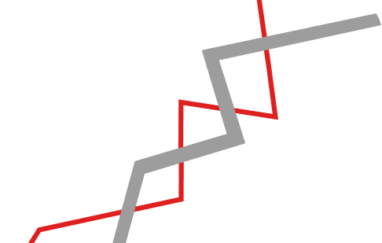

Набор (50%)
Веб (30%)
Акциденция (20%)
Proxima Nova — шрифт Марка Симонсона, объединивший
в себе новый и геометрический гротеск, стилистически
напоминающий Futura и Akzidenz Grotesk
Изначально, в 1981 г., Proxima Nova задумывался как Zanzibar,
но в 1991 г. автор пересмотрел идею и назвал шрифт Visigothic.
Позже Марк Симонсон обнаружил, что получившийся шрифт
не имеет ничего общего с этим словом, и в 1994 г. выпустил
его под названием Proxima Sans
1981
1991
1994
2005
Zanzibar
Visigothic
Proxima Sans
Proxima Nova
В течение нескольких лет автор дорабатывал свой шрифт:
увеличивал количество начертаний и символов, изменял
интервалы и кернинг. Так в 2005г. был выпущен Proxima Nova
*Proxima Nova, Proxima Nova Condensed и Proxima Nova Extra Condensed
буква, которая
идеально вписывается
в
форма знаков
выносные элементы на одной линии
с прописными знаками
небольшой контраст основных
и соединительных штрихов
Банк «Доверие»
7, 19$ (35%)
Proxima Nova — сбалансированный лаконичный шрифт,
который можно использовать не только для набора сплошных
текстов, но и для акциденции. Идеально подходит для веба
Оплатить онлайн
ОАО «Счастье»
Банк «Доверие»
ООО «Свобода»
Добавить в портфель
Анна Деревянкина
Б22ДЗ09